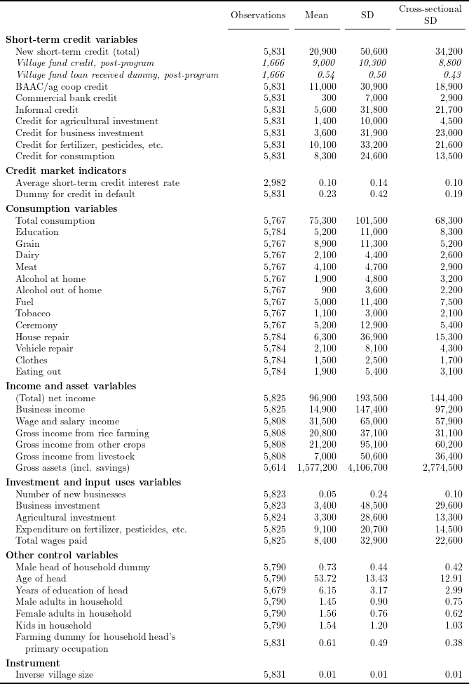

# Install and load packages ---------------
packages <- c(
"tidyverse",
"haven",
"lfe",
"stargazer",
"broom",
"kableExtra",
"labelled",
"XML",
"scales",
"magrittr"
)
pacman::p_load(packages, character.only = TRUE, install = TRUE)
# Load an example dataset ---------------
data_short <- read_dta("Kaboski2012_replication/AEJApp2009-0115_data/documentation/AnnualData_ShortSample.dta")data_table1 <- data_short %>%
mutate(
vfstn = ifelse(year %in% c(6, 7), vfst, NA),
vfstp = (vfst > 0),
vfstpn = ifelse(year %in% c(6, 7), vfstp, NA),
defcrp = (defcr > 0),
bsnew = bnew + snew,
tbinv = pinv + binv + bafdn + sinv + safdn,
twage = frmwage + shrwage + buswage,
farm = ifelse(
!is.na(och),
ifelse((och > -5) & (och <= 15), 1, 0),
0
),
age2h = ageh^2
) %>%
group_by(case_id) %>%
mutate(
invHHi = mean(ifelse(year == 6, lead(1 / vHH), NA), na.rm = TRUE)
) %>%
ungroup()credit_varlist <- c(
"newst", "vfstn", "vfstpn", "baacst", "cbst", "infst",
"agst", "busst", "frtst", "const"
)
credit_market_varlist <- c(
"rst", "defcrp"
)
cons_varlist <- c(
"tc", "educ", "grain", "milk", "meat", "alch1",
"alch2", "fuel", "tobac", "cerem", "houserep", "vehicrep",
"clothes", "mealaway"
)
inc_varlist <- c(
"netinc", "buspro", "wageinc",
"riceinc", "cropinc", "liveinc", "gassd"
)
invest_varlist <- c(
"bsnew", "tbinv", "finv",
"frtexp", "twage"
)
other_varlist <- c(
"maleh", "ageh", "educh",
"madult", "fadult", "kids", "farm"
)
iv_varlist <- c(
"invHHi"
)
all_varlist <- c(
credit_varlist, credit_market_varlist, cons_varlist, inc_varlist,
invest_varlist, other_varlist, iv_varlist
)
var_label_list <- c(
"New short-term credit (total)", "Village fund credit, post-program",
"Village fund loan received dummy, post-program",
"BAAC/ag coop credit", "Commercial bank credit",
"Informal credit", "Credit for agricultural investment",
"Credit for business investment", "Credit for fertilizer, pesticides, etc.",
"Credit for consumption", "Average short-term credit interest rate",
"Dummy for credit in default", "Total consumption",
"Education", "Grain", "Dairy", "Meat", "Alcohol at home",
"Alcohol out of home", "Fuel", "Tobacco", "Ceremony", "House repair",
"Vehicle repair", "Clothes", "Eating out", "(Total) net income", "Business income",
"Wage and salary income", "Gross income from rice farming",
"Gross income from other crops", "Gross income from livestock",
"Gross assets (incl. savings)", "Number of new businesses", "Business investment",
"Agricultural investment", "Expenditure on fertilizer, pesticides, etc.",
"Total wages paid", "Male head of household dummy", "Age of head",
"Years of education of head", "Male adults in household",
"Female adults in household", "Kids in household",
"Farming dummy for household head's\n\\hspace{1em}primary occupation",
"Inverse village size"
)
base_sumstat <- data_table1 %>%
select(all_of(all_varlist)) %>%
map( ~ tibble(
obs = format(sum(!is.na(.x)), digits = 0, format = "f", big.mark = ","),
mean_var = mean(.x, na.rm = TRUE),
sd_var = sd(.x, na.rm = TRUE)
)
) %>%
tibble() %>%
unnest(".")
cross_sectional_sd <- data_table1 %>%
group_by(case_id) %>%
select(all_of(all_varlist)) %>%
summarise_all(mean, na.rm = TRUE) %>%
ungroup() %>%
select(-case_id) %>%
map( ~ tibble(
cross_section_sd_var = sd(.x, na.rm = TRUE)
)
) %>%
tibble() %>%
unnest(".")
cbind(var_label_list, base_sumstat, cross_sectional_sd) %>%
mutate_if(is.double, ~ ifelse(
.x >= 100,
comma_format(accuracy = 1e+2)(.x),
comma_format(accuracy = 1e-2)(.x)
)
) %>%
mutate(var_label_list = linebreak(var_label_list, align = "l")) %>%
set_colnames(NULL) %>%
kable("latex", booktabs = TRUE, escape = FALSE, align = c("l", rep("r", 4))) %>%
kable_styling(latex_options = "scale_down") %>%
add_header_above(
c(" ", "Observations", "Mean", "SD", "Cross-sectional\nSD")
) %>%
pack_rows(index = c(
"Short-term credit variables" = length(credit_varlist),
"Credit market indicators" = length(credit_market_varlist),
"Consumption variables" = length(cons_varlist),
"Income and asset variables" = length(inc_varlist),
"Investment and input uses variables" = length(invest_varlist),
"Other control variables" = length(other_varlist),
"Instrument" = length(iv_varlist)
)) %>%
save_kable("tex/Kaboski2012_table1_replicate.tex")